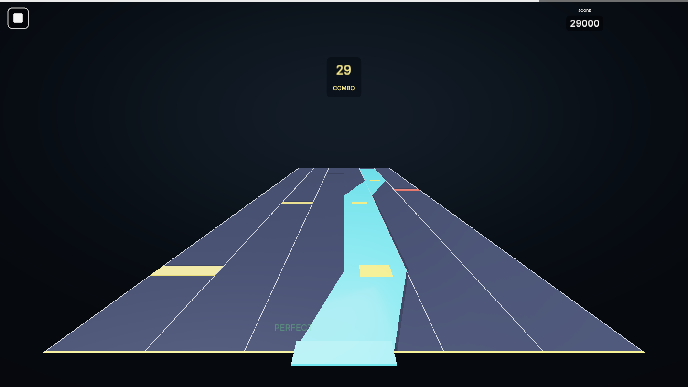
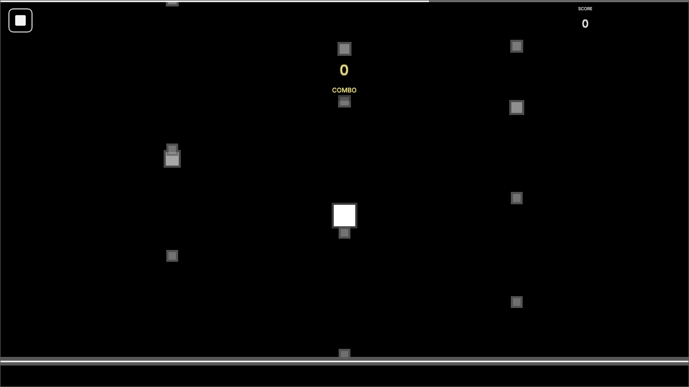

Music Game Engine
五个工程难题
分块内 HDR 转换与带宽优化（tile-local HDR）
原路径把一张 2400 × 1080 的 RGBA16F 图像（约 20.7 MB）写回外部内存，做显示转换时再读入。把转换放进同一个 GPU 分块（tile-local rendering）后，四轮测量中两条路径均达到 119.4–119.5 FPS，平均外部读写带宽从 5.13 降至 0.33 GB/s。
Galaxy S21（Mali-G78）· Drop 3D / Hard · 固定在歌曲第 1.3 秒 · 120 Hz · GPU 频率未锁定 轮次 转换路径 实际上屏（FPS） 外部读写（GB/s） 1 写回后读入 119.5 5.1315 2 分块内转换 119.5 0.3301 3 分块内转换 119.4 0.3277 4 写回后读入 119.4 5.1275 四轮都固定同一首歌与画面时间，交换新旧顺序，并在正常刷新节奏下读取 Mali 硬件计数器。横屏 90° 对照还逐像素检查画质，分数、进度条和暂停按钮所在区域逐像素一致。下图是用于阅读的缩略图，差值来自原始抓帧。

Galaxy S21 · 原路径，HDR 写回后读入 
同一场景 · 分块内读取 HDR，界面另行绘制 跨轨长按的头部错位（hold-head alignment）
激活的长按头一直按起始轨绘制。修复让它跟随长按路径与判定线的交点。桌面第 17.625 秒，头部横坐标从 614.5 px 移到 719.5 px，谱面预期为 720.0 px。S21 上跟随两次换轨，四个采样点和尾部全部命中。
在 1440 × 810 的 Windows 画面里，同一次自动游玩于第 17.625 秒停帧。在判定线所在的第 737 行测量青色头部两端的中点。S21 复测则注入单指沿完整路径滑过，直到第 21.000 秒结算尾部。

修复前 · 长按主体已换轨，青色头部仍在左侧 
修复后 · 同一时刻，青色头部位于路径与判定线的交点 变速后的扫描线错位（scan-line timing）
谱面在 106.65 秒从 89.6 BPM 变为 134.8 BPM，旧运行时仍按开头的速度扫描。编辑器和运行时改为从同一组变速与逐页设置构建分页时间表（page schedule）。两张 Windows 试玩抓帧固定在 107.32 秒，音符中心都在第 401 行。
同一首歌另取两处对照。第二个变速段在 149.96 秒时，扫描线从约第 710 行回到第 62–64 行，音符位于第 64 行。开头未变速的 19.96 秒作为控制帧，修改前后像素完全相同。

修复前 · 扫描线在第 671–673 行 
修复后 · 扫描线在第 399–401 行 S21 120 Hz 上屏延迟归因（frame presentation）
旧版圆盘首次创建点光源管线花了 73.696 ms，移到开歌前预热解决了这次卡顿。对剩余漏刷，按游戏缓冲编号对齐入队、GPU 就绪、合成器接收和实际上屏的时刻。
这台 S21 在 120 Hz 下有 9 / 57,639 个上屏间隔超过 12.50 ms。这 9 次的下一帧都在上一张上屏前 9.38–12.76 ms 就绪，系统合成器（SurfaceFlinger）已在目标刷新前接收缓冲，对应显示帧被标记为合成器 CPU 超时。60 Hz 下有 0 / 5,763 个间隔超过 25 ms。
复测使用一台 S21、标准画质、四首 Studio / Hard 展示谱与真实音频。游戏缓冲编号逐帧对应到 Perfetto 和 SurfaceFlinger 的记录。归因止于合成器阶段，驱动、系统调度和显示硬件之间的分工仍需另外测量。
Android 后台恢复崩溃（Vulkan resource lifetime）
结算页把字体图集画成封面，暴露出纹理寿命超过 Vulkan 设备的问题。清理纹理后，暂停页第 4 次恢复仍崩溃。新的调用栈指向描述符绑定（descriptor binding），由此找到批处理器复用的失效缓存。清理第二处状态后，五个界面各恢复 20 次，100/100 次画面匹配。
批处理器按图像视图句柄缓存描述符集（descriptor set）。设备重建后，新的图像视图可能取得旧句柄值，查表便会取回已销毁池里的描述符集。修复在设备退出时清空该表。复测依次覆盖标题、选曲、设置、暂停和结算。

S21 结算页 · 恢复后，封面位置显示字体图集 
同一结算页 · 修复后第 20 次恢复，封面正常